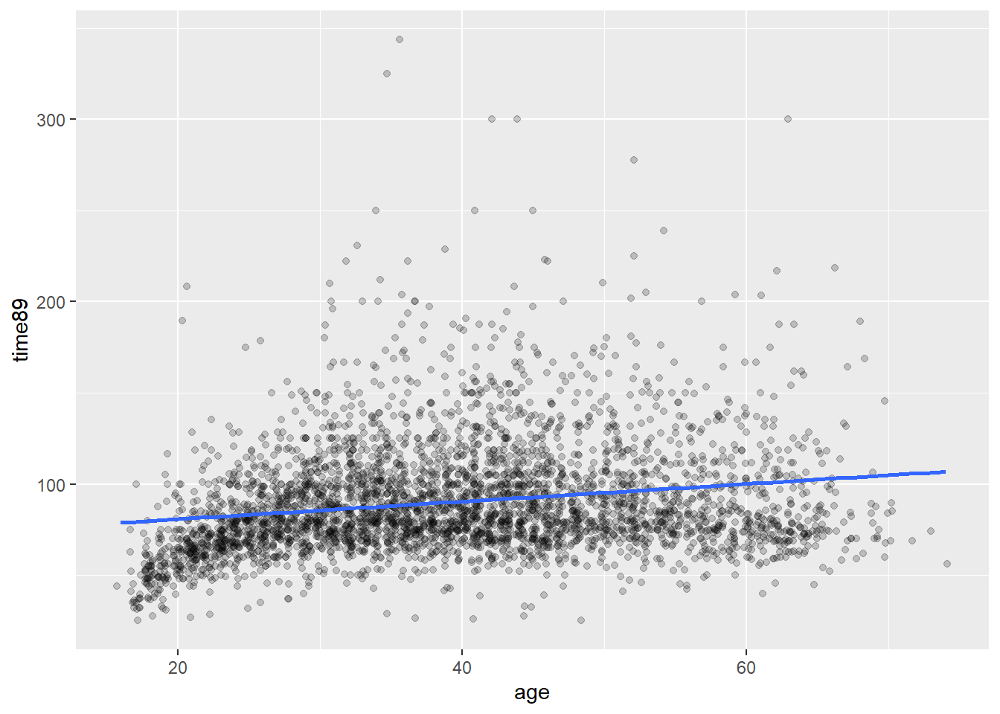
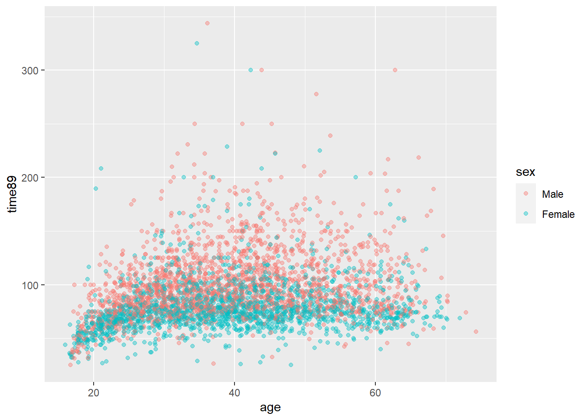

library(tidyverse)
library(gtsummary)8 Regresjon: Sammenheng mellom variable
Vi skal her se på helt grunnleggende lineær regresjon med en og to forklaringsvariable.
8.1 Scatterplot
Bivariat regresjon beskriver sammenhengen mellom to variable. En naturlig start er å se på et scatterplot. Her er en figur som viser hvordan timelønn varierer med alder. I det nedenforstående er det brukt jitter og gjennomsiktig farge for å håndtere overplotting.
I tillegg er det tegnet inn en linje som illustrerer trenden i gjennomsnittlig lønn med alder. Denne linjen skrår svakt oppover, som altså betyr at gjennomsnittlig lønn øker noe med alder. Vi ser med det blotte øyet at en rett linje ikke beskriver denne sammenhengen perfekt. Først og fremst er det en stor variasjon rundt denne linjen, så det er mye annet som påvirker lønna enn alder. Det er også verd å legge merke til at i de yngste aldersgruppene er lønna en god del lavere - og kanskje litt lavere i eldste aldersgrupper også. Så en rett linje er kanskje ikke optimalt i utgangspunktet. Fordelen med en rett linje er at vi kan si noe slikt som at “gjennosmsnittslønna øker med x antall kroner for hvert år eldre man blir”. Hvis linja er kurvlineær blir det litt mer komplisert. Så et første poeng er at en slik linje er en forenkling, og det er en tilsiktet forenkling.
ggplot(abu89, aes(x =age, y = time89))+
geom_jitter(alpha = .2)+
geom_smooth(method = "lm", se = FALSE)
Det er en viss tendens til at lønnen øker med alder, men det er ikke helt lett å si hvor mye. Poenget med lineær regresjon er å beskrive en gjennomsnittlig trend.
ggplot(abu89, aes(x =age, y = time89))+
geom_jitter(alpha = .2)+
geom_smooth(method = "lm", se = FALSE)Denne trendlinja er hva vi vanligvis kaller regresjonslinje.
8.2 Regresjonslinja
Regresjonslinja kan beskrives med et stigningstall, som sier hvor bratt linjen er. Substansielt sett betyr det hvor mye utfallsvariabelen (y-aksen) endres med økning i forklaringsvariabelen (x-aksen). I tillegg trenger vi også vite hvor høyt/lavt linjen ligger. 1. Til det bruker vi startpunktet for linjen, der hvor \(x\) har verdien 0. Dette må regnes ut, og det er akkurat dette estimering av lineær regresjon gir oss.
Utregningen av regresjonslinja går vi ikke inn på her, men intuitivt sett ønsker vi jo den beste linja og ikke en hvilken som helst omtrentlig linje. Datapunktene (de svarte punktene i grafen) er spredt rundt linja, og avstanden mellom linje og punkt kalles residualer. Summen av disse residualene er grunnlaget for mål på hvor godt regresjonslinja beskriver de faktiske dataene. Den beste linja er definert som den som minimerer residualene. Det er dette som kalles “minste kvadraters metode”.
I R estimeres regresjonsmodeller med funksjonen lm. Første argument er en formel på formen utfallsvariabel ~ forklaringsvariabel. Rekkefølgen variablene oppgis i er altså viktig. Dernest må det spesifiseres hvilket datasett som skal brukes med data =. 2.
Legg alltid resultatene i et eget objekt med et navnt som er rimelig enkelt å forstå hva er. I følgende kode legges resultatet i en nytt objekt lm_est1. Deretter bruker kan man hente ut de delene av resultatet vi er interessert i. I aller første omgang er bare interessert i regresjonslinjas konstantledd (startpunktet) og stigningstall. Disse kaller vi vanligvis regresjonskoeffisienter. Det kan vi få ut ved å bruke funksjonen coef.
library(equatiomatic)
lm_est1 <- lm(time89 ~ age, data = abu89)
summary(lm_est1)
Call:
lm(formula = time89 ~ age, data = abu89)
Residuals:
Min 1Q Median 3Q Max
-69.287 -19.131 -6.304 12.864 255.258
Coefficients:
Estimate Std. Error t value Pr(>|t|)
(Intercept) 71.11019 1.62232 43.83 <2e-16 ***
age 0.48284 0.03926 12.30 <2e-16 ***
---
Signif. codes: 0 '***' 0.001 '**' 0.01 '*' 0.05 '.' 0.1 ' ' 1
Residual standard error: 29.73 on 3757 degrees of freedom
(368 observations deleted due to missingness)
Multiple R-squared: 0.0387, Adjusted R-squared: 0.03844
F-statistic: 151.2 on 1 and 3757 DF, p-value: < 2.2e-16coef(lm_est1)(Intercept) age
71.1101883 0.4828415 Regresjonslingningen kan skrives på formel der \(\alpha\) er konstantleddet og \(\beta\) er stigningstallet slik:
extract_eq(lm_est1, use_coefs = FALSE)\[ \operatorname{time89} = \alpha + \beta_{1}(\operatorname{age}) + \epsilon \]
Når vi setter inn de estimerte koeffisientene inn i ligningen får vi følgende:
extract_eq(lm_est1, use_coefs = TRUE)\[ \operatorname{\widehat{time89}} = 71.11 + 0.48(\operatorname{age}) \]
Tolkningen her er at gjennomsnittlig forskjell i timelønn mellom grupper der aldersforskjellen er ett år er 0.48 kroner i favør av den eldre gruppen.3 Merk enheten her: stigningstallet tolkes på den skalaen utfallsvariabelen er på, i dette tilfellet kroner. Det er også uttrykt endring ved at forklaringsvariabelen endres med nøyaktig 1.
Vi sier gjerne at regresjonslinjen er estimert, og det innebærer at det er usikkerhet i estimatene. Vi kommer tilbake til dette, men en vanligere output fra regresjonsmodeller er å bruker summary som følger:
summary(lm_est1)
Call:
lm(formula = time89 ~ age, data = abu89)
Residuals:
Min 1Q Median 3Q Max
-69.287 -19.131 -6.304 12.864 255.258
Coefficients:
Estimate Std. Error t value Pr(>|t|)
(Intercept) 71.11019 1.62232 43.83 <2e-16 ***
age 0.48284 0.03926 12.30 <2e-16 ***
---
Signif. codes: 0 '***' 0.001 '**' 0.01 '*' 0.05 '.' 0.1 ' ' 1
Residual standard error: 29.73 on 3757 degrees of freedom
(368 observations deleted due to missingness)
Multiple R-squared: 0.0387, Adjusted R-squared: 0.03844
F-statistic: 151.2 on 1 and 3757 DF, p-value: < 2.2e-168.3 Flere variable
Det er ikke så ofte vi bruker regresjon med bare en forklaringsvariabel, såklat “enkel lineær regresjon”.4 Langt mer vanlig er å bruke flere variable samtidig i det vi kaller “multippel regresjon”.5 I multippel regresjon kan man altså beskrive mer kompliserte mønstre i dataene.
Vi fortsetter med eksempelet om lønn og alder, men utvider med en dimensjon til, nemlig kjønn. La oss først se på kjønnsforskjellene i gjennomsnittlig timelønn.
abu89 <- abu89 %>%
mutate(sex = factor(ifelse(female == 1, "Female", "Male"), levels = c("Male", "Female"))) %>%
filter(!is.na(time89))
abu89 %>%
select(sex, time89) %>%
tbl_summary(by = sex) | Characteristic | Male, N = 2,0031 | Female, N = 1,7561 |
|---|---|---|
| Gjennomsnittlig timelønn 1989 | 94 (79, 115) | 75 (66, 88) |
| 1 Median (IQR) | ||
Vi ser altså at menn hadde i gjennomsnitt høyere timelønn enn kvinner, nærmere bestemt 21 kroner mer. Dette kan vi også undersøke med lineær regresjon som følger:
lm_est2 <- lm(time89 ~ sex , data = abu89)
coef(lm_est2)(Intercept) sexFemale
99.84382 -20.75229 Det er altså slik at koeffisienten, \(\beta\), gir den samme differansen som en enkel sammenligning av to gjennomsnitt.
Vi har allerede sett på alder og lønn, så vi kan utvide dette til å inkludere kjønn samtidig i et scatterplot.
Grafisk er det da greit å bruke farger og slik vise for menn og kvinner for seg. I ggplot spesifiseres da group = sex og at fargene skal settes etter sammen grupperingen col = sex slik:
ggplot(abu89, aes(x = age, y = time89, group = sex, col = sex)) +
geom_jitter(alpha = .4)
lm_est3 <- lm(time89 ~ sex + age, data = abu89)
summary(lm_est3)
Call:
lm(formula = time89 ~ sex + age, data = abu89)
Residuals:
Min 1Q Median 3Q Max
-72.37 -17.12 -4.90 10.99 247.94
Coefficients:
Estimate Std. Error t value Pr(>|t|)
(Intercept) 81.10147 1.58497 51.17 <2e-16 ***
sexFemale -20.62511 0.91186 -22.62 <2e-16 ***
age 0.47380 0.03684 12.86 <2e-16 ***
---
Signif. codes: 0 '***' 0.001 '**' 0.01 '*' 0.05 '.' 0.1 ' ' 1
Residual standard error: 27.89 on 3756 degrees of freedom
Multiple R-squared: 0.1539, Adjusted R-squared: 0.1535
F-statistic: 341.7 on 2 and 3756 DF, p-value: < 2.2e-168.4 Pene tabeller og eksport til fil
Vi vil som regel ha behov for å flytte resultatene over til et tekstbehandlingsprogram. En strategi som går ut på “klipp og lim” eller skjermbilde etc er uaktuelt og må unngås for nærmest enhver pris.6 Resultatene skal skrives til en fil på en effektiv måte. Det er en fordel om tabellene da ser ganske ok ut i utgangspunktet og du kan bruke samme prosedyre for å eksportere til flere typer format hvis behovet skulle melde seg. Det er jo MS Word som er viktigst for dere, mens de øvrige formatene nedenfor er for spesielt interessert - men noen av dere vil kanskje bli det på et senere tidspunkt.
Her presenteres noen pakker som eksporterer til de viktigste formatene som er:
- MS Word - det vanligste tekstbehandlingsprogrammet som de aller fleste av dere bruker.
- rtf - rikt tekstformat. Er et enklere format som fungerer på tvers av de fleste programmer. Kan brukes i Word også.
- html - for websider
- latex - for mer tekniske dokumenter, særlig hvis du har mye formler og stæsj
- Markdown/Quarto - for dynamiske dokumenter med integrert R-kode og tekst, og kan eksportere ferdig dokument til alle ovennevnte formater7 Det som fungerer med Markdown fungerer også med Quarto for samme formål.
8.4.1 Alt 1: Bruke modelsummary()
Eksporterer til bl.a. følgende formater: Word, rtf, html, latex, markdown
Fordel: Gir pene og oversiktlige tabeller med enkel kode, og relativt enkelt å modifisere videre. Eksporterer direkte til alle viktigste formater. Kan også lett integreres med andre eksterne verktøy, først og fremst “grammar of tables” i pakket {gt} Ulempe:
Her er kode for en enkel tabell med to regresjonsmodeller som vist ovenfor. Merk at objektene med regresjonsresultatene må legges inni funksjonen list().
library(modelsummary)
modelsummary(list(lm_est2, lm_est3))| (1) | (2) | |
|---|---|---|
| (Intercept) | 99.844 | 81.101 |
| (0.637) | (1.585) | |
| sexFemale | -20.752 | -20.625 |
| (0.932) | (0.912) | |
| age | 0.474 | |
| (0.037) | ||
| Num.Obs. | 3759 | 3759 |
| R2 | 0.117 | 0.154 |
| R2 Adj. | 0.116 | 0.153 |
| AIC | 35854.9 | 35694.9 |
| BIC | 35873.6 | 35719.8 |
| Log.Lik. | -17924.434 | -17843.437 |
| F | 496.278 | 341.699 |
| RMSE | 28.49 | 27.88 |
Denne tabellen inneholder mer enn du er interessert i. Nedre del av tabellen inneholder “goodness of fit” statistikker, altså mål på hvordan modellen passer til dataene. Det finnes mange slike, men ingen grunn til å gå seg vill i disse her. De kan fjernes med argumentet gof_omit = og så angis statistikkene med de navnene du ser i tabellen. Det skrives på en spesiell måte: som en tekststreng angitt med anførselstegn rundt, og | mellom hver. I koden nedenfor beholdes kun antall observasjoner, \(r^2\) og \(F\).8
Vi gjør et par andre justeringer samtidig for å demonstrere noe funksjonalitet. I stedet for å oppgi estimatet og standardfeil på forskjellig linje kan vi spesifisere å ha det på samme linje med argumentet estimate =. Merk at den statistikken du vil rapportere settes i parentes {…} og mellomrom og parentes er ellers som det står. Man har også andre valg, derav det vanligste i bruk er å angi p-verdier eller stjerner for å vise disse på en forenklet måte. Det angis ved {p.value} eller {stars} på tilsvarende måte.
I stedet for standardfeil på egen linje er det her angitt konfidensintervall på neste linje. For konfidensintervall vil det som forvalg være 95%, men vi kan angi f.eks. 99% konfidensintervall i stedet ved conf_level =. Hvis man ikke vil ha noe på neste linje kan man angi statistic = NULL i stedet. Man kan også velge å sette inn p.value eller stars på denne linjen.
Merk at utfallsvariabelen i modellene er timelønn i kroner. I forrige tabell ble estimatene gitt med tre desimaler. Det er i overkant mange desimaler. En desimal er mer passende og nedenfor endres dette med fmt =.
modelsummary(list(lm_est2, lm_est3),
fmt = 1,
estimate = "{estimate} ({std.error})",
statistic = 'conf.int',
conf_level = .99,
gof_omit = 'DF|Deviance|R2 Adj.|AIC|BIC|Log.Lik.|RMSE')| (1) | (2) | |
|---|---|---|
| (Intercept) | 99.8 (0.6) | 81.1 (1.6) |
| [98.2, 101.5] | [77.0, 85.2] | |
| sexFemale | -20.8 (0.9) | -20.6 (0.9) |
| [-23.2, -18.4] | [-23.0, -18.3] | |
| age | 0.5 (0.0) | |
| [0.4, 0.6] | ||
| Num.Obs. | 3759 | 3759 |
| R2 | 0.117 | 0.154 |
| F | 496.278 | 341.699 |
To siste ting å ta med her er å endre navn på variablene til noe mer presentabelt og eksportere til Word. Med argumentet coef_rename = angis variabelen slik den ser ut i output og spesifiserer hva du vil skal stå. Koden nedenfor viser eksempel.
For å eksportere til Word settes output = med filbane og filnavn, og der filhalen .docx angir Word format. Du kan eksportere til annet format ved å angi annen filhale f.eks. .rtf eller .html.
#|echo: false
modelsummary(list(lm_est2, lm_est3),
fmt = 1,
estimate = "{estimate} ({std.error})",
statistic = 'conf.int',
conf_level = .99,
gof_omit = 'DF|Deviance|R2 Adj.|AIC|BIC|Log.Lik.|RMSE',
coef_rename = c("sexFemale" = "Kvinne",
"age" = "Alder",
"(Intercept)" = "Konstant")) | (1) | (2) | |
|---|---|---|
| Konstant | 99.8 (0.6) | 81.1 (1.6) |
| [98.2, 101.5] | [77.0, 85.2] | |
| Kvinne | -20.8 (0.9) | -20.6 (0.9) |
| [-23.2, -18.4] | [-23.0, -18.3] | |
| Alder | 0.5 (0.0) | |
| [0.4, 0.6] | ||
| Num.Obs. | 3759 | 3759 |
| R2 | 0.117 | 0.154 |
| F | 496.278 | 341.699 |
modelsummary(list(lm_est2, lm_est3),
fmt = 1,
estimate = "{estimate} ({std.error})",
statistic = 'conf.int',
conf_level = .99,
gof_omit = 'DF|Deviance|R2 Adj.|AIC|BIC|Log.Lik.|RMSE',
coef_rename = c("sexFemale" = "Kvinne",
"age" = "Alder",
"(Intercept)" = "Konstant"),
output = "output/reg_table.docx")Merk at Word vil vise tabellen med de fonter etc som er forvalgt for Word. Dette kan du endre i Word etterpå. Det er en rekke funksjoner i Word for å formattere tabeller som du kan bruke.
Pakken {modelsummary} har også en rekke andre funksjoner for å redigere tabeller som du kan utforske ved behov. For avanserte brukere kan man også gjøre om tabellen til et gt-objekt og redigere videre med pakken {gt} eller tilsvarende med pakken {flextable}. Det er altså tilnærmet uendelige muligheter for avanserte tabeller. Dette går imidlertid langt utenfor hva de fleste av dere vil trenge. {modelsummary} har egen hjemmeside med mer detaljer og instruksjoner.
8.4.2 Alt 2: Bruke {stargazer}
Mange R-brukere foretrekker pakken {stargazer}. Dette er en noe eldre funksjon og er derfor godt etablert.
Eksporterer til bl.a. følgende formater: rtf, html, latex, markdown
Fordel: Er en stand-alone pakke men gir enkelt veldig fine tabeller som antakeligvis er det du trenger Ulempe: Eksport til Word er ikke den beste, men god nok.
Stargazer lager tabeller i kun tre formater: latex, html, og ren tekst. Vi velger derfor type = "text" for at det skal se ok ut her.
library(stargazer)
stargazer(lm_est2, lm_est3, type = "text")
=======================================================================
Dependent variable:
---------------------------------------------------
time89
(1) (2)
-----------------------------------------------------------------------
sexFemale -20.752*** -20.625***
(0.932) (0.912)
age 0.474***
(0.037)
Constant 99.844*** 81.101***
(0.637) (1.585)
-----------------------------------------------------------------------
Observations 3,759 3,759
R2 0.117 0.154
Adjusted R2 0.116 0.153
Residual Std. Error 28.495 (df = 3757) 27.891 (df = 3756)
F Statistic 496.278*** (df = 1; 3757) 341.699*** (df = 2; 3756)
=======================================================================
Note: *p<0.1; **p<0.05; ***p<0.01Vi kan modifisere tabellen tilsvarende som vi gjorde med {modelsummary}. Forklaringer av de enkelte argumenter finnes i manualen for stargazer.
covariate.labels = Angir teksten for variabelnavn. Merk at det oppgis i den rekkefølgen det skal stå, så være veldig nøye hvis du har mange variable! report = angir hva som skal inngå i tabellen, der hver bokstav viser til spesifikke deler: v = variabelnavn, c = koeffisient/estimat, s = standardfeil. single.row = setter statistikkene på samme linje fremfor under hverandre. keep.stat = angir hvilke “model fit statistics” som skal rapporteres. Hvis du skriver “all” her får du en lang remse tilsvarende vi fikk med {modelsummary}. digits = angir antall desimaler
stargazer(lm_est2, lm_est3,
type = "text",
covariate.labels = c("Kvinne", "Alder", "Konstant"),
report = "vcs",
single.row = TRUE,
keep.stat = c("n","rsq", "f"),
digits = 1)
============================================================
Dependent variable:
-----------------------------------------------
time89
(1) (2)
------------------------------------------------------------
Kvinne -20.8 (0.9) -20.6 (0.9)
Alder 0.5 (0.04)
Konstant 99.8 (0.6) 81.1 (1.6)
------------------------------------------------------------
Observations 3,759 3,759
R2 0.1 0.2
F Statistic 496.3*** (df = 1; 3757) 341.7*** (df = 2; 3756)
============================================================
Note: *p<0.1; **p<0.05; ***p<0.01For å eksportere til Word kan man bruke rikt tekstformat (.rtf) eller html. rtf-formatet er som navnet tilsier ren tekst og selv om det ser greit ut, så er videre redigering i et tekstbehandlingsprogram krøkete. (Prøv og se selv). Bruk heller html fordi da beholdes tabell-strukturen. Du kan åpne html-tabeller fra Word og redigere videre der ved behov.
stargazer(lm_est2, lm_est3,
type = "text",
covariate.labels = c("Kvinne", "Alder", "Konstant"),
report = "vcs",
single.row = TRUE,
keep.stat = c("n","rsq", "f"),
digits = 1,
out = "output/reg_starg.html")Mer detaljer finner du i {stargazer} sin vignette.
8.4.3 Alt 3: Bruke gtsummary()
Eksporterer til bl.a. følgende formater: Word, rtf, html, latex, markdown
Fordel: Kan lett integreres med andre funksjoner, først og fremst “grammar of tables” i pakket gt. Bruker samme rammeverk som for deskriptive tabeller med tbl_summary. Ulempe: Litt mer mikk-makk enn modelsummary og stargazer
Du kan jo tenke deg flere parallelle linjer i plottet ovenfor med samme stigningstall↩︎
Grunnen til det siste er at R kan ha flere datasett oppe samtidig, så R vet ikke nødvendigvis hvilket datasett du tenker på↩︎
Noen ganger sier man at gjennomsnittslønna øker med 0.48 kroner for hvert år eldre man blir. Men det er ikke helt riktig, for dataene beskriver jo ikke individuell endringer over tid! Men hvis du synes det er lettere å tenke på det på den måten er det ok - men prøv å husk at det også er litt feil.↩︎
Det er selvsagt ingenting enkelt med slike modeller utover at det finnes mer kompliserte varianter.↩︎
Noen kaller dette også for multivariat regresjon, men det er tvetydig da det også kan bety modeller med flere utfallsvariable, som er noe ganske annet.↩︎
Hvis du blir tatt i å gjøre slikt vil faglærer sette fyr på datamaskinen din som straff.↩︎
F.eks. dette dokumentet er skrevet i Quarto↩︎
Øvrige statistikker har selvsagt sitt bruksområde. De nevnte holder for de fleste formål.↩︎